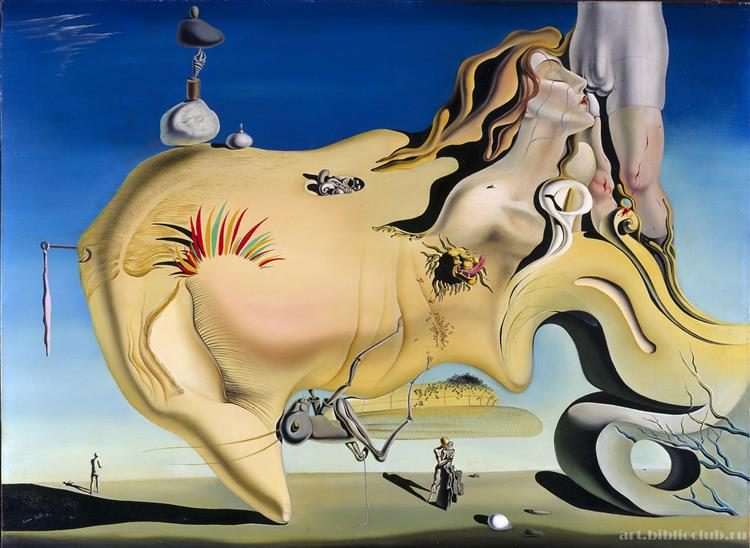

O que é Surrealismo?
O Surrealismo é um movimento artístico e literário que surgiu na Europa na década de 1920, com o objetivo de liberar a imaginação humana, explorando o subconsciente e o mundo dos sonhos. Foi fundado pelo poeta francês André Breton, que escreveu o "Manifesto Surrealista" em 1924, delineando as ideias centrais do movimento. O Surrealismo se caracteriza por imagens e situações que desafiam a lógica, combinando elementos realistas de maneiras absurdas e fantásticas. Influenciado por teorias psicanalíticas, especialmente as de Sigmund Freud, o Surrealismo busca revelar os desejos reprimidos e os pensamentos ocultos do inconsciente. Artistas e escritores surrealistas utilizavam técnicas como a escrita automática, o uso de paradoxos, e a justaposição de objetos incongruentes para criar obras que desafiam a percepção convencional e a lógica. Além da pintura, o Surrealismo também influenciou a literatura, o cinema, a fotografia, e até o teatro. Salvador Dalí, René Magritte, Max Ernst e Joan Miró são alguns dos artistas mais conhecidos do movimento, cujas obras continuam a fascinar e intrigar o público até hoje.
"A Persistência da Memória" (1931) - Salvador Dalí

Significado: A pintura explora a fluidez do tempo e a instabilidade da realidade. Dalí sugere que o tempo não é rígido e imutável, mas maleável e subjetivo, influenciado pela percepção humana e o inconsciente.
"O Filho do Homem" (1964) - René Magritte

Significado: Magritte explora o conceito de ocultação e a natureza enigmática da realidade. A obra questiona a relação entre o visível e o oculto, sugerindo que a identidade e a verdade podem ser mascaradas ou parcialmente reveladas.
"O Grande Masturbador" (1929) - Salvador Dalí
Significado: A obra aborda temas de desejo sexual, medo e repressão. Dalí explora a complexidade dos desejos humanos e as ansiedades que podem surgir do conflito entre desejo e moralidade.
"Os Amantes" - René Magritte - 1928

Significado: Os Amantes" é uma obra que explora temas de mistério, identidade e a impossibilidade de uma conexão total entre as pessoas. O pano que cobre os rostos dos amantes pode ser interpretado como uma metáfora para a barreira que existe entre os seres humanos, mesmo nos momentos de maior intimidade. Magritte frequentemente utilizava essa imagem de rostos cobertos para simbolizar o anonimato, o desconhecido, ou a ideia de que as aparências podem ocultar a verdadeira natureza das coisas.
"A Chave dos Sonhos" (1930) - René Magritte

Significado: Magritte desafia a associação entre palavras e imagens, questionando a confiabilidade da linguagem como meio de descrever a realidade. A obra sugere que as palavras e as imagens têm seus próprios significados e que sua combinação pode ser arbitrária.